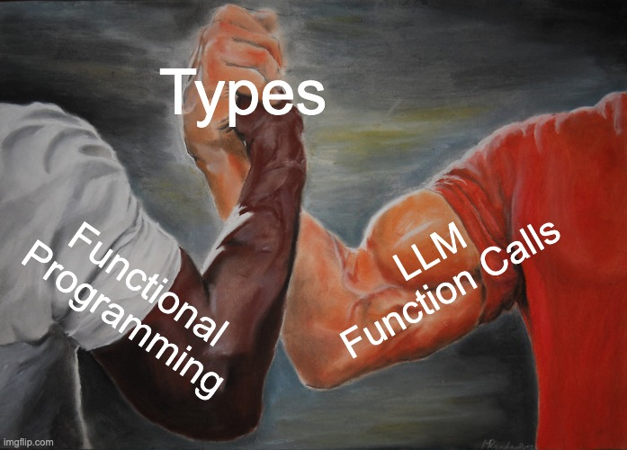
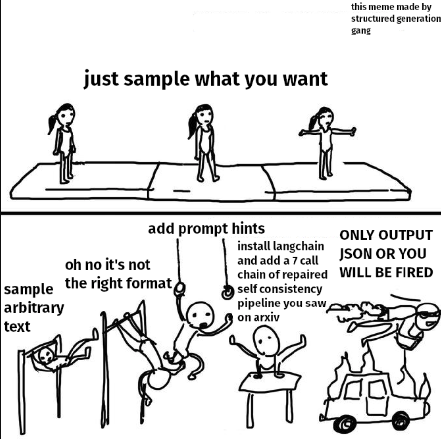
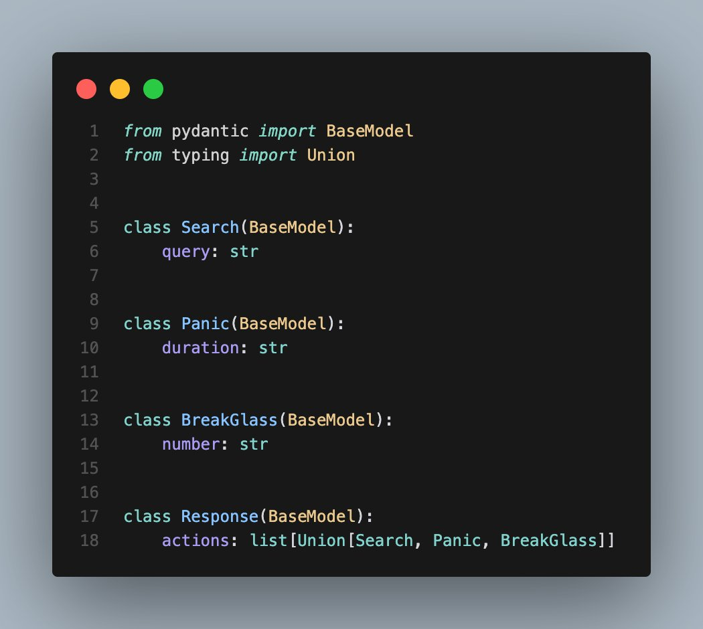
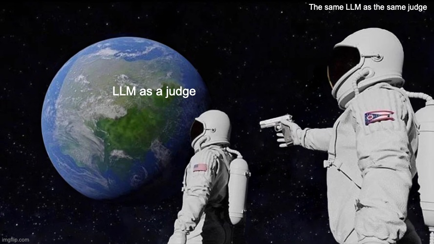
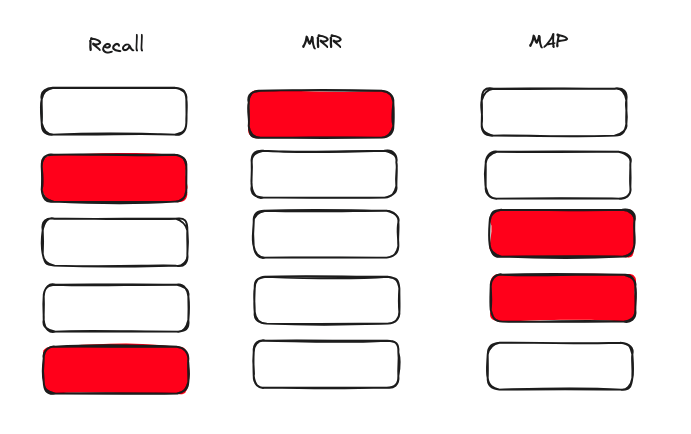

I am currently a Research Engineer at 567 Labs. We primarily work with companies looking to scale out their machine learning capabilities. We help at all stages of this, from hiring to prototyping and high level design.
I do some open source on the side and help mantain Instructor - a python package that makes it easy to use LLMs to extract structured data ( More on this ). I mostly code in Python nowadays but am moving to do more Rust. ( Instructor is releasing a rust package soon! )
Last year we saw a lot of experimentation, this year with more funding and interest in the space, the goal has shifted to making them more reliable, consistent and secure.
There are three things that will come up a lot in my talk
How does this come together?
This means that we need a consistent way to ensure that our systems are reliable and consistent.
I think Structured Extraction is the way to go when it comes to this, that’s what Instructor solves.
It’s pretty straightforward, basically you make a function call and get back a validated output
import instructor
from pydantic import BaseModel
from openai import OpenAI
# Define your desired output structure
class UserInfo(BaseModel):
name: str
age: int
# Patch the OpenAI client
client = instructor.from_openai(OpenAI())
# Extract structured data from natural language
user_info = client.chat.completions.create(
model="gpt-3.5-turbo",
response_model=UserInfo,
messages=[{"role": "user", "content": "John Doe is 30 years old."}],
)
print(user_info.name)
#> John Doe
print(user_info.age)
#> 30In short, you can express LLM calls as a typed function, not unlike a traditional function call
Instead of encoding in hard logic that is brittle when the input changes, we can instead provide a model with some context and let it make decisions in a fuzzier manner.
This is acceptable for some specific processes and helps in overall adaptability.
Libraries such as BabyAGI and Langchain enabled people to chain together complex iterations. But, these agents often lacked conconistency and reliability with the open ended ReACT methodology.
The main problem with the ReAct methodology is that it’s too open ended. It’s difficult to accurately evaluate where the agent might have gone wrong or if there was a better approach sometimes
In short it was
A lot of these agents would loop for 6 hours, give you a $80 OpenAI Bill and not get anything done.
Instead, this year we’ve seen a shift from a view agents as autonomous systems that have full autonomy without guardrails to more complex fuzzy decision making proceses.
There are a few broad reasons why this is happening
Evaluations were huge this year.
Historically it’s been difficult to evaluate LLM outputs due to their open-ended nature. Some specific issues that are still unsolved include alignment of styles and hallucinations.
A lot more of insight has been gained in the last year.
Generating Synthethic Data is easy, generating good synthethic data is hard.
It’s not because we’re running out of data to train foundation models.
As we train and deploy models for niche use cases, it’s increasingly easier to generate synthethic data to test and validate our implementations (Eg. A model that needs to be able to click on buttons on the web or Retrieval for RAG )
It’s extremely difficult to ensure that
A great presentation during the conference was by Vikhyatk, who talked about the moondream model
Moondream is a small vision model, with ~1.5 billion parameters. That’s significantly smaller than most models these days.
They trained the model with a significant of synthethic data and shared a lot about their insights in generating the training data.
The challenge comes when you’re prompting the same model for multiple rounds - it tends to converge on the same topics.
So let’s see a potential workload in action - generating synthethic questions
You have some existing knowledge base that you’d like to generate synthethic questions from so you can test your retrieval pipeline.
class QuestionAnswerPair(BaseModel):
"""
This model represents a pair of a question generated
from a text chunk, its corresponding answer, and the
chain of thought leading to the answer. The chain of
thought provides insight into how the answer was
derived from the question.
"""
chain_of_thought: str = Field(
description="The reasoning process leading to the answer."
)
question: str = Field(
description="The generated question from the text chunk."
)
answer: str = Field(
description="The answer to the generated question."
)client = instructor.from_openai(openai.AsyncOpenAI())
def generate_question(text: str):
question = await client.chat.completions.create(
model="gpt-3.5-turbo",
messages=[
{
"role": "system",
"content": """You are a world class AI that excels at generating hypothethical search queries.
You're about to be given a text snippet and asked to generate a search query which is specific
to the specific text chunk that you'll be given. Make sure to use information from the text chunk."""
},
{"role": "user", "content": f"Here is the text chunk : {text}"},
],
response_model=QuestionAnswerPair,
max_retries=3,
)
return (question,text)With a new synthethic dataset, we can now do things such as
Evaluating the retrieval is easy since we can quickly generate a large dataset of question to text pairs. This allows us to test metrics such as recall, precision or mrr across a large number of queries easily.
Deploying it as a function call in production is easy
import instructor
from openai import OpenAI
client = instructor.from_openai(OpenAI())
class QueryPlan(BaseModel):
sub_queries:list[str]
def execute_query():
## Retrieval Logic here
return ""
def generate_query_plan():
return client.chat.completions.create(
model="gpt-4o",
messages=[
{"role": "user", "content": "Generate a query plan for the user query of {query}"}
],
response_model=QueryPlan,
)This gives us a lot of potential ways to monitor the performance of our system.
and many more questions
Since our model now outputs a python object that can be serialized to JSON, we can
Happy to chat more. I’m at @ivanleomk on twitter and my email is ivanleomk@gmail.com.